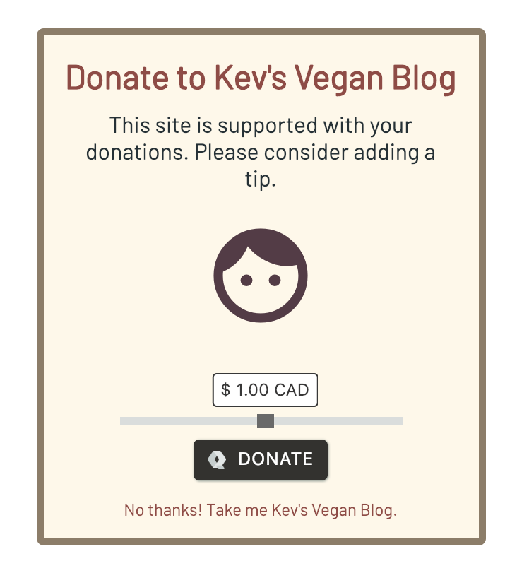

Pennywall is a micro paywall / donation-wall / tip-jar for sharing your content on social networks. You can generate as many pennywalls as you like, one for each link you want to share.

[ See demo ] [ Another demo ]
Users can choose to tip you with a tiny payment, or simply skip past the wall to the target link.
$ cat pennywall.json
{
"apiKey": "YOUR_API_KEY",
"destination": {
"url": "https://kevsveganblog.com/post_how_to_eat_bananas"
},
"theme": {
"name": "heart",
"title": "Kev's Vegan Blog"
}
}
$ cat pennywall.json | bash <(curl -s https://pennywall.io/build)
{"success": true, "path": "https://give.pennywall.io/v1myg6q"}
A themeable donation-wall generator for sharing social content.
Fork it on GitHub.